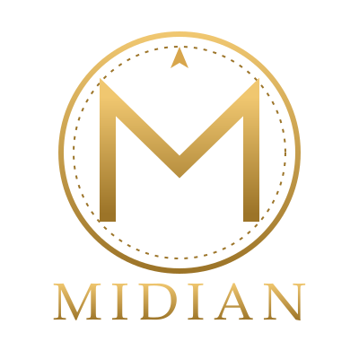

Shard italiano di Ultima Online. Un mondo di razze, classi e mestieri, dove ogni personaggio può ascendere.
Lo shard
Midian è uno shard italiano di Ultima Online, già attivo nel 2004 quando fu accolto dalla comunità di NipoGames, e oggi tornato in vita su un server ricostruito da zero, compatibile con il mondo e le script originali. Si gioca con il client 2D, in italiano, con regole e sistemi propri che lo rendono diverso da qualsiasi altro server.
Ogni personaggio nasce da una scelta: una delle dieci razze e una delle dieci classi, ciascuna con limiti, abilità speciali e libri propri. Accanto alla classe c'è il mestiere: falegname, fabbro, sarto, minatore, tinker, scriba, alchimista. Gli artigiani specializzati arrivano dove gli altri non possono.
Razze e classi
Umani, elfi, elfi oscuri, nani, mezzorchi, demoni, vampiri, arcani, silphidi e mezzelfi. Guerrieri, maghi, druidi, paladini, cavalieri neri, chierici, necromanti, assassini, arcieri e bardi.
Ascensioni
Tre livelli di ascensione per ogni classe: statistiche più alte, nuovi limiti e, all'ultimo livello, un nuovo aspetto.
Cavalcature
Allena resistenza e velocità del tuo cavallo sui percorsi e fallo ascendere: potrebbe rinascere come un raro Mustang.
Crafting
Dai minerali comuni all'adamantio, leghe e acciai, legni preziosi, pelli di drago e balron, case, barche e serrature a combinazione.